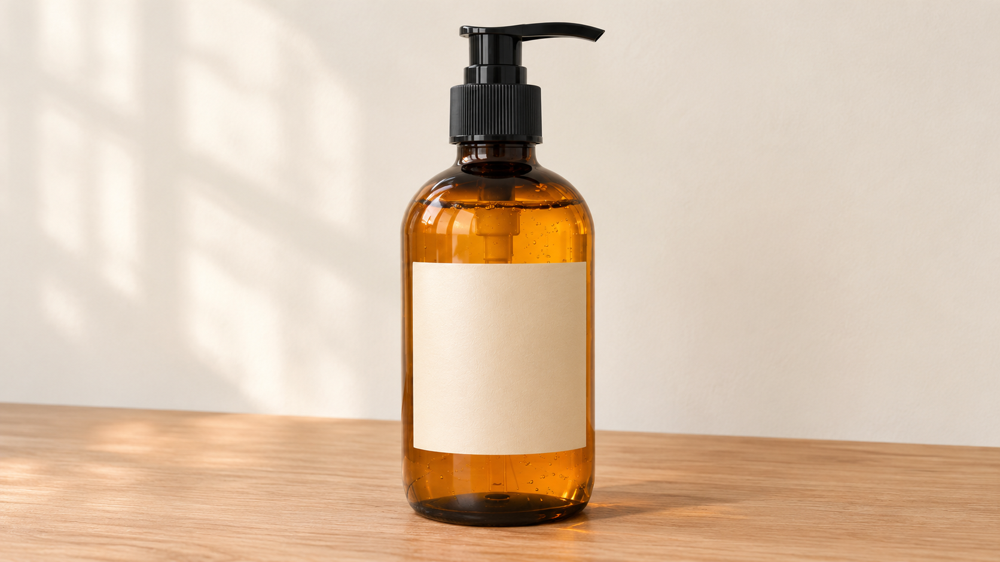
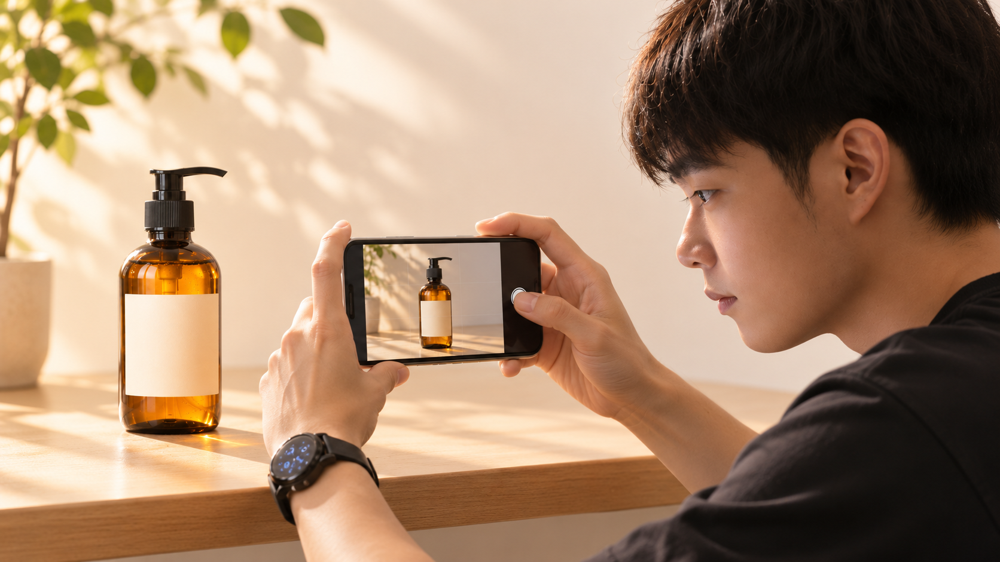
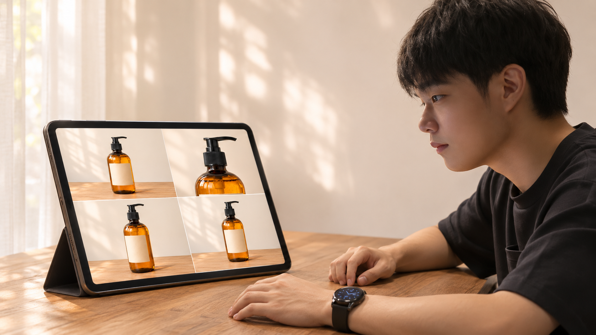
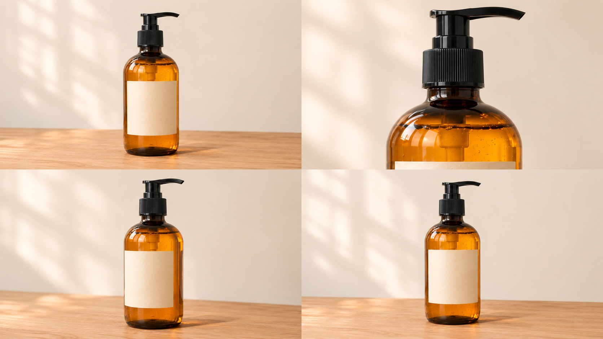

0〜2秒｜全体何の商品かを見せる
商品写真を撮ったら、構成づくりからAIへ。まずは、1本つくる流れを試してみましょう。
まずは見本から
写真1枚を、10秒の流れにする
4カットの動きと尺を確かめる構成見本（無音）。下の絵コンテと同じ順で見られます。
商品写真スマホで撮る
→
ChatGPT構成・指示文
→
Gemini動画にする
始める前に用意するもの利用条件と、今回の作例
使う権利のある商品写真、画像を扱えるChatGPT、動画作成が使えるGeminiを用意します。Geminiの動画作成には、対象のGoogle AIプラン等の利用条件があります。18歳以上が対象です。画面と利用枠はアカウントにより異なります。
作例は、架空の無印ソープボトルです。練習用の商品写真と絵コンテを保存セットへ入れています。自分の商品へ替える場合は、写真で確認できる特徴を使いましょう。
写真を用意する
1商品全体が入る1枚を撮る

背景はすっきり。まずは商品を1つ、ポンプや底まで切らずに写します。今回は横型16:9で進めます。

僕がやったのも、スマホで商品を撮ってChatGPTへ送るところから。写真を入口にすると、構成づくりからAIに任せられます。
自分の商品へ替えるとき書き換えるところを確認
下の指示文の「ソープボトル」を商品名へ替え、「見せたいこと」を写真で確認できる特徴へ替えます。縦型で作るなら、写真と絵コンテ、動画の指定をすべて9:16へそろえてください。
ChatGPTへ送る
2写真から、絵コンテを画像にする
新しいチャットへ写真を添付し、下の指示文を送ります。出てきた絵コンテは、次の指示を送る前に見ておきます。
2〜5秒｜質感ガラスへゆっくり寄る
5〜8秒｜斜めポンプと形を見せる
8〜10秒｜全体最後は止めて余韻
絵コンテの指示文全文を開く ＋
この商品写真を分析して、プロデザイナーが作るような10秒のプロモーション動画の絵コンテを、1枚の画像で作ってください。 【使う商品】添付写真のソープボトル 【用途】商品紹介の練習用。横型16:9 【見せたいこと】琥珀色のガラスと、黒いポンプの形 【雰囲気】明るいクリーム色の背景。暖かな自然光。清潔で落ち着いた印象 【構成】0〜2秒：全体、2〜5秒：質感へ寄る、5〜8秒：斜めから形を見せる、8〜10秒：全体へ戻り余韻 4コマを2×2に並べ、各コマに秒数・カメラの動き・狙いを短く添えてください。商品本体、ポンプ、ラベルの位置と比率は元写真を保ってください。写真から分からない成分、効能、価格やブランド名は作らないでください。商品ラベルに新しい文字を追加しないでください。静止画の絵コンテを作る工程です。
「いい感じにして」商品も動きも、どこが違うか分かりにくい
写真＋特徴「琥珀色」と「黒いポンプ」を指定

僕のときは約10分。構成も、その次の動画用プロンプトもAIに任せたので、ずっと手を動かしていたわけじゃないんです。今回も、この4カットを次へ渡します。
所要時間は僕の一例です。生成待ちや修正によって変わります。
同じチャットで続ける
3動画の指示文へ変える
ChatGPT

絵コンテ →
動画の指示文
動画の指示文
→
Gemini
元写真＋
動画の指示文
動画の指示文
ChatGPTの返答を全文コピー。Geminiへ添付するのは、最初の商品写真です。別チャットへ移る場合は、絵コンテも添えて文脈を渡します。
動画用へ変換する指示文全文を開く ＋
今の絵コンテをもとに、Gemini Omniで動画にするためのプロンプトを1本にまとめてください。Geminiへは、最初に送った商品写真も添付します。 横型16:9、合計10秒を希望します。4カットの秒数、画角、カメラの動き、光、カットのつなぎを具体的に書いてください。 同じソープボトルを最後まで使い、形・色・ポンプ・ラベルの位置と比率を保つ条件を明記してください。 商品は置いたまま、カメラが動く構成にしてください。手、人、泡、文字、ナレーションは追加せず、無音を希望します。成分・効能・価格などの未確認情報は加えないでください。 Geminiへそのまま貼れる本文だけを出してください。
Geminiへ渡す完成例全文を開く ＋
添付写真のソープボトルを使って、横型16:9、合計10秒の商品紹介動画を作成してください。クリーム色の背景、暖かな自然光、落ち着いた清潔感のある雰囲気です。 0〜2秒：ボトル全体を正面寄りの角度で見せ、カメラがゆっくり近づきます。 2〜5秒：琥珀色のガラスの肩部分へ寄り、光の透過と反射を見せます。新たな水滴や模様は足しません。 5〜8秒：ボトルを置いたまま、カメラが小さく右へ移動し、黒いポンプとボトルの立体感を見せます。 8〜10秒：最初と同じボトル全体へ戻り、最後の1秒はカメラを止めます。 商品本体の輪郭、琥珀色、黒いポンプ、ラベルの位置と比率は添付写真と一致させてください。ラベルに文字を作らないでください。商品を回転・変形させず、別の商品へ切り替えないでください。手、人、泡、成分・効能・価格の表現を追加しないでください。無音、テロップとナレーションなし。カット間の明るさをそろえてください。
Geminiで動画にする
4写真と指示文を入れて生成する
1「動画を作成」へ
2 写真を追加
3 動画用プロンプトを貼る
横型16:9・10秒…
横型16:9・10秒…
4 送信 ↑
生成されたら、動画を再生
生成が終わったら、まず再生。写真と同じ商品に見えるかを、最初から最後まで確認します。
待っている時間もあるので、画面につきっきりで操作する工程ではありません。出力されたら、次の確認へ進みます。
動画作成が見つからない・尺が合わないとき表示と条件を確認
対象プラン、年齢、提供地域、利用上限を公式ヘルプで確認します。10秒は希望する構成です。出力が違う尺なら、対応する長さへカットの配分を調整し、無理に同じ秒数を詰め込まないでください。
直して、保存する
5商品を確認して、動画を保存する
直すときは「何秒の、何を」を一つずつ。動画の下のメニューから「動画をダウンロード」を選び、保存先で再生できたら完了です。
1か所だけ直す指示文全文を開く ＋
直前の動画の【2〜5秒】だけを修正してください。 【直す点】寄りすぎて黒いポンプが別の形に見えます。 添付した元写真のポンプの形を保ち、カメラの寄りを弱くしてください。 それ以外のカット順、商品、背景、色、アスペクト比は変更しないでください。
保存後のファイルを確認するスマホ・PCで見失わないために
スマホはブラウザ／アプリのダウンロード先やファイルアプリ、PCはダウンロードフォルダを開きます。名前を「商品名_promo_v1」などへ変え、元写真と同じフォルダへ。保存した動画を再生し、最後のカットまで見てください。写真は上書きせず残します。
写真・絵コンテ・指示文をまとめて保存
練習用の商品写真、4コマ絵コンテ、10秒の構成見本、指示文4本・記入シート、このガイドを収録。ZIPを展開して「index.html」をブラウザで開けば、手順を見返せます。
練習セットを保存する（ZIP）スマホはZIPをタップして展開します。プロンプトは各txtファイルからも全文をコピーできます。
まずは一つ
手元の商品を1つ、撮ってみる
「何を撮るか」で止まったら、まずはラベルや形が分かりやすい1つから。今回の写真で練習してから、自分の商品へ替えても大丈夫です。
案件にするなら、渡すものを先に決める
この作例なら「商品写真から10秒の商品紹介動画を1本」。依頼を受ける前に、縦横の比率、伝える特徴、修正の範囲、納期を確認します。生成だけで終わらず、商品と違っていないかを見てから渡しましょう。
この1本を、副業の一歩につなげる
商品紹介動画を作れたら、次は「誰に、何を提供するか」。AI副業の進め方を整理したい方へ、僕の公式LINEで「AIマネタイズの教科書」をお渡ししています。
 公式LINEで教科書を受け取る
公式LINEで教科書を受け取る機能の確認先公式情報
Geminiで動画を作成・保存する
機能と利用条件の確認：2026年11月7日。